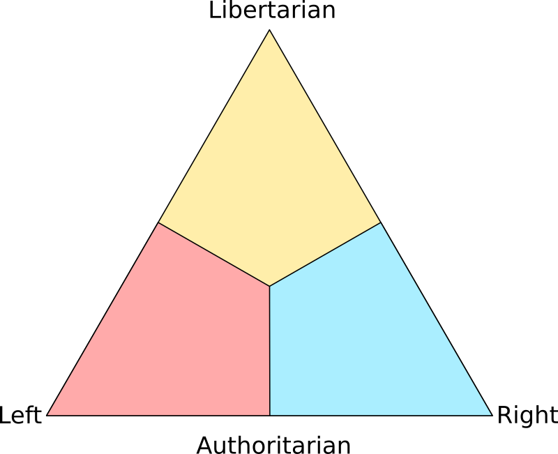

The political triangle is an improvement over the traditional political compass. While the original test attempted to harmonize the libertarian American right with the traditional hierarchical right by separating the economic and social axis, this still resulted in quite a few problems. For example, anti-statism and progressive statism were often conflated with each other as "libertarian". The right wing was described as laissez-faire free markets, but in practice was used to mean crony capitalism. This test, instead of trying to divide social vs economic beliefs, recognizes that there are three different main philosophies at the core of political systems: the (traditional) right favors hierarchy, the elite classes, and a well defined social structure; the libertarian side (the American right) esteems individual liberty as the top priority; and the left seeks equality, community, and collectivism.

You may also notice that this test has only 12 questions. Another flaw of the original political compass test was that it asked mostly about specific issues, which caused skewed results and made many questions difficult to answer for those who did not have one of 2 given positions. Some issues may also result from separate disagreements which are mostly unrelated to a political viewpoint. This test resolves that by inquiring about your general attitudes towards politics instead.
The test will attempt to judge your standpoint between these vastly different belief systems. Answer each question as the society you would like to live in. Some answers are extreme, and some are moderate. Once you finish the test, it will plot your position on the triangle based on your answers, between left, right, and libertarian (the top section of the triangle).
What should be the priority when spending tax money?
How should we deal with disadvantaged or minority groups?
How should business and corporations be regulated?
Should different groups be segregated?
What kind of speech, if any, should be regulated?
How should the cost of services such as college and health care be dealt with?
How should criminals be dealt with?
What is your stance on immigration?
How should property be handled?
What best describes your ideal form of government?
What is the most important thing which must be protected?
What sorts of victimless actions, if any, should be criminalized?